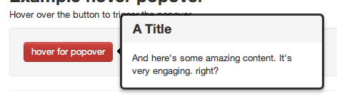

Building components
There have been many attempts to come up with some sort of client-side package manager, and some of them do it very well, however I think they are missing the big picture, a “component” is much more than just JavaScript.
Create components, not JavaScript packages
A component can be not just JavaScript, but CSS, images, fonts or other resources, or a component may be any combination of these. This is the main idea that I want to sell, we need to broaden modularity beyond just JavaScript source. This is not a new concept at all, Drupal has been employing it for over 7 years but it seems like something that hasn’t really caught on in most communities, at least not beyond the private application level.
A great example of a component would be a popover from the Twitter Bootstrap library (not picking on you guys, it’s just a good example):

This thing looks so sexy that I just want to install it with my package manager, and have it automatically available to me in the client. For this to happen we need to admit that a component is much more than JavaScript, and should be packaged accordingly. Like the “dialog” in UIKit for example:

UIKit even at this state is not a good example of a solution for this problem, it uses its own custom build script to produce a single ui.js and ui.css file from the components in the repo, so it’s still not something the community can consume directly without the custom build step. I’ve started moving UIKit components over to github.com/component.
Another problem in the community is the size and scope of projects.
Size and scope
The classic battle between DOM manipulation libraries such as jQuery and MooTools serve as an obvious example of fragmentation. Even if one is more popular than the other this doesn’t mean we don’t have a problem. Have you ever seen a great jQuery plugin and thought to yourself “damn! I’m using MooTools!” or perhaps the other way around? That highlights the problem right there, we should have no “jQuery plugins”, no “Dojo modules”, just simply “components” that we can all consume.
Components could then utilize these smaller, more modular dependencies to perform tasks. Instead of requiring jQuery as a dependency to convert a string of HTML into elements, one could simply add domify as a dependency and invoke domify(html), similar components could facilitate event handling etcetera. My point here is that ubiquitous libraries like jQuery will eventually be a thing of the past and fragmentation will hopefully decrease.
Another thing I think we really need to avoid, is the use of pre-processed assets within components, this includes things like Stylus, LESS, Sass, Jade, CoffeeScript among others. These are all great and can increase productivity in your application, my opinion is that they do not belong in public components, they fragment the community and reduce contributions, chances are if you’re depending on these tools for UI packages your component’s scope is too large.
A package such as “UIKit” could then simply aggregate all its parts into one convenient component for those who wish to consume the entire thing, but there’s no reason these need to live together, we’re just lacking the tools to make this convenient.
This leads to the next issue, modernization!
Modernization
There are a lot great tools being produced to deal with modernization, within reason we should not have to deal with these kinds of issues at the component level. Stylesheets are particularly bad for this, libraries are either faced with using CSS preprocessors to provide vendor prefixed versions of their styles, or of course need to manually declare them. This is a huge pain, and forever changing. What do we do? Nothing!
I strongly suggest that we write our public component stylesheets using regular old CSS. Other tools can still be utilized at the application level if you really need them. With explicit vendor prefixing out of the way we can enjoy building components since we’re not focused on vendor details (when possible), they will remain light-weight, and customizable via consumer manipulation via a library such as CSSOM or node-css.
On to the next topic! Structural styling.
Structural styling
Structural styling is another thing I frequently have issues with. JavaScript libraries, jQuery plugins and others often ship with stylesheets, this is great but these libs should only define structural styles.
What do I mean by “structural styling”? Take for example the Dialog from UIKit, it contains only styles necessary to make the component presentable, but does not force a ton of extra styling on you, and serves as a good base to build on. I even took this a little far, box-shadows etc should be omitted by default.

The basic idea here is let stylesheets be stylesheets, application should define the look and feel of things, if you must provide “themed” versions simply have a component named “dialog-dark-theme” with only a stylesheet in it, and so on.
package.json
Components could have a “component.json” much like the commonjs package.json, or we can simply extend package.json. This would of course act as the package manifest, letting the world know if it has stylesheets, templates, scripts, images and so on. I believe we should avoid the minimal gains of magical auto-globbing of files, we can just simply list these and avoid unnecessary complexity and I/O.
A Dialog component would simply look like the following, nothing fancy here, just an explicit manifest.
{
"name": "dialog",
"version": "1.0.0",
"scripts": ["index.js"],
"styles": ["dialog.css"],
"templates": ["dialog.html"]
}
The reason I would name these styles, and templates instead of css and html would be that when using private components within your application, the build tool could simply sniff out things like ["login.jade"], realize it’s a Jade template and compile it appropriately. Like I’ve mentioned though I dont think these tools belong in public code.
It may also be useful in the future to define optional dependencies for legacy browser support. Suppose I dont care anything below IE 9, I should be able to tell the build system that I’m fine with omitting legacy functionality, and the packages that handle this sort of things for events, the DOM etcetera would simply not load those in, the APIs that those modules provide would remain identical.